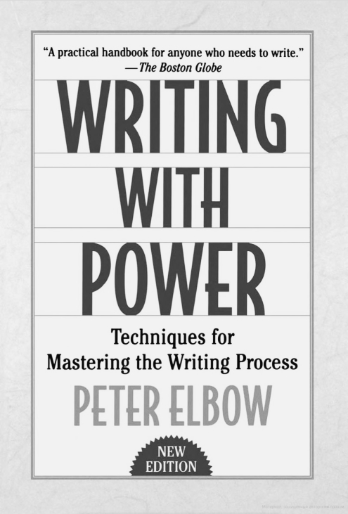

«Если вы хотите, чтобы читатели вдохнули жизнь в ваш текст, чтобы они получили от него мощный опыт, тогда вы должны вдохнуть опыт в свои слова, когда пишете. Я не знаю, почему так должно быть, что если вы испытываете то, о чем пишете, — если вы идете в бамбук, — это увеличивает шансы читателя испытать бамбук. Но, похоже, именно так это и работает» — из книги «Письмо с силой»
Он недвусмысленно отмечает, что этот совет применим также к академическому и научному письму. Таким образом, практика свободного письма учит, как полностью сосредоточиться на том, о чем мы пишем, и это позволяет писать впечатляющие статьи, предложения и отчеты.
Ниже приведен пример мозгового штурма на анлийском языке для аргумента / исследовательской работы о необходимости защитного щита вокруг Земли:
1. Можно перечитывать то, что написали позже, если есть желание. Только не стоит ожидать, что в этом будет много смысла.
2. Не критикуйте то, что написали. Дело не в том, хорошо ли то, что написано. В первую очередь речь идет о том, чтобы заставить слова течь рекой. Дело не в писательском мастерстве, умении использовать правильную грамматику или синтаксис. Это свободное от суждений пространство просто для того, чтобы писать и генерировать новое.
3. Рассматривайте свободное письмо как форму упражнения. Речь идет о том, чтобы разработать те мышцы, которые используются для письма (то есть мозг и ваши руки).
4. Если вы не знаете, что написать, ничего страшного. Пишите пустые слова, пока не придет что-то еще. Суть в том, чтобы не слишком много думать о том и больше писать.
«Не думай, просто пиши!» — Рэй Брэдбери

Классическое руководство для всех, кому нужно писать, «Письмо с силой» обра- щается ко всем, кто боролся со словами, стремясь обрести с их помощью власть. Здесь Питер Элбоу подчеркивает, что основные действия, лежащие в основе хорошего письма, и основные упражнения, способствующие этому, на самом деле совсем не сложны.